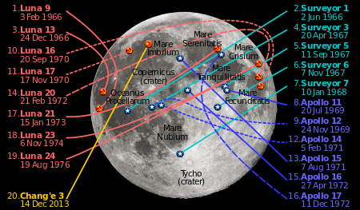

 A moon landing is the arrival of a spacecraft on the surface of the Moon. This includes both manned and unmanned (robotic) missions. The first human-made object to reach the surface of the Moon was the Soviet Union's Luna 2 mission, on 13 September 1959.
The United States' Apollo 11 was the first manned mission to land on the Moon, on 20 July 1969.[4] There have been six manned U.S. landings (between 1969 and 1972) and numerous unmanned landings, with no soft landings happening from 1976 until 14 December 2013. To date, the United States is the only country to have successfully conducted manned missions to the Moon.
The Soviet Union performed the first hard (unpowered) Moon landing in 1959 with the Luna 2 spacecraft, a feat the U.S. duplicated in 1962 with Ranger 4. Since then, twelve Soviet and U.S. spacecraft have used braking rockets to make soft landings and perform scientific operations on the lunar surface, between 1966 and 1976. The USSR accomplished the first soft landings and took the first pictures from the lunar surface on the Luna 9 and Luna 13 missions. The U.S. followed with five unmanned Surveyor soft landings.
The Soviet Union achieved the first unmanned lunar soil sample return with the Luna 16 probe on 24 September 1970. This was followed by Luna 20 and Luna 24 in 1972 and 1976. The Luna 17 and Luna 21 were successful unmanned rover missions.
Two unmanned landing missions were unsuccessful: Luna 23 landed successfully, but its scientific equipment then failed. The U.S. Surveyor 4 lost all radio contact only moments before its landing.
More recently, other nations have crashed spacecraft on the surface of the Moon at speeds of around 5,000 miles per hour (8,000 km/h), often at precise, planned locations. These have generally been end-of-life lunar orbiters that, because of system degradations, could no longer overcome perturbations from lunar mass concentrations ("masscons") to maintain their orbit. Japan's lunar orbiter Hiten impacted the Moon's surface on 10 April 1993. The European Space Agency performed a controlled crash impact with their orbiter SMART-1 on 3 September 2006.
India's Space Agency ISRO performed a controlled crash impact with its Moon Impact Probe (MIP) on 14 November 2008. The MIP was an ejected probe from the Indian Chandrayaan-1 lunar orbiter and performed remote sensing experiments during its descent to the lunar surface.
The Chinese lunar orbiter Chang'e 1 executed a controlled crash onto the surface of the Moon on 1 March 2009. The rover mission Chang'e 3 was launched on 1 December 2013 and soft-landed on 14 December.>